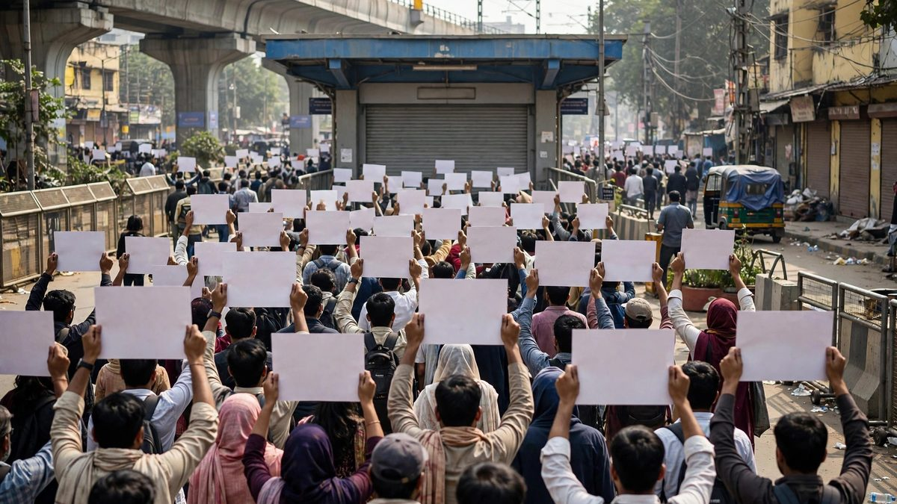

3,000 detained in Delhi protest over poll chief's resignation
Police boarded an Air India flight to detain protest leaders on arrival, then swept up 3,000 people, four former chief ministers and sitting MPs in a crackdown over alleged voter-roll tampering.

Key points
- NEW DELHI: The opposition INDIA bloc returned to Delhi's streets on Monday, marching toward the Supreme Court to demand the resignation of Chief Election Commissioner Gyanesh Kumar over the…
- Delhi Police detained around 3,000 people across the capital on Saturday as they shut down a protest demanding the resignation of Chief Election Commissioner Gyanesh Kumar.
- The protest was called by the Cockroach Janta Party (CJP), a new political outfit, over alleged irregularities in the Election Commission's Special Intensive Revision (SIR) of electoral rolls.
Update: INDIA bloc marches to Supreme Court; journalists detained
NEW DELHI: The opposition INDIA bloc returned to Delhi's streets on Monday, marching toward the Supreme Court to demand the resignation of Chief Election Commissioner Gyanesh Kumar over the contested voter-list revision. Congress leader Rahul Gandhi filed a writ petition in the Supreme Court challenging the Election Commission's SIR process, while Akhilesh Yadav, Tejashwi Yadav, Priyanka Gandhi Vadra and other leaders joined the "Dilli Chalo" march. Police stopped the march at barricaded Bhagwan Das Road. The Delhi Metro closed entries and exits at six central stations for much of the day before reopening them. The march followed a weekend crackdown in which nearly three dozen journalists from outlets including the Indian Express, Scroll and Newslaundry were detained for hours while covering youth-led protests, according to Reuters. Reporters said police used excessive force, seized phones and roughly handled clearly identifiable press; press groups and Reporters Without Borders warned press freedom in India is under threat. Police said some protesters had posed as journalists.
Delhi Police detained around 3,000 people across the capital on Saturday as they shut down a protest demanding the resignation of Chief Election Commissioner Gyanesh Kumar. The sweep began before sunrise and stretched into the evening, pulling in four former chief ministers, sitting MPs, lawyers, students and activists.
The protest was called by the Cockroach Janta Party (CJP), a new political outfit, over alleged irregularities in the Election Commission's Special Intensive Revision (SIR) of electoral rolls. Opposition parties say the revision drive is deleting legitimate voters. The Commission says it is removing duplicates and ineligible entries.
Police denied permission for the planned march to Jantar Mantar, citing law-and-order concerns, and then fanned out across the city. They picked up CJP founder Abhijeet Dipke and co-convenors Saurav Das and Ashutosh Ranka aboard an Air India flight the moment it landed in Delhi from Mumbai. Dipke streamed the detention live on Instagram, telling the officers on board: "You could have waited till we came out. Come arrest us, we are not afraid."
The dragnet widened fast. Former Delhi chief minister Arvind Kejriwal was detained after hours of house arrest. Former West Bengal chief minister Mamata Banerjee and five Trinamool MPs were taken away in a prisoner van near South Avenue. Former Kerala chief minister Pinarayi Vijayan and former Tripura chief minister Manik Sarkar were also detained, along with CPM leaders Brinda Karat and M A Baby. Lawyers marching from the Supreme Court toward Jantar Mantar were stopped at barricades on Bhagwan Das Road and taken in.
By evening, reports said even YouTuber Dhruv Rathee had been picked up from his Gurugram residence. Around 50 police personnel had gathered outside his home the night before.
Why it matters
A protest against the country's election chief is rare. A police sweep this wide is rarer. The detention of four former chief ministers on the same day turns a Delhi demonstration into a national confrontation between the ruling establishment and the opposition over how India's elections are run.
The SIR revision sits at the center. Electoral rolls decide who gets to vote. The opposition calls the current drive a purge of legitimate voters; the Commission calls it cleanup. The truth of the rolls will shape the next general election. That is why both sides are treating this fight as existential.
The detentions on a plane set a new bar for preemptive policing. Picking up protest leaders before they reach the protest site, inside an aircraft on arrival, is a tactic that will get tested in court. Expect lawyers to argue about it within days.
The context
Saturday is not happening in a vacuum. Delhi is a political tinderbox: the capital's security apparatus answers to the central government, and opposition leaders routinely complain that protest permissions are denied on thin grounds.
The establishment is closing ranks around the Election Commission. On Saturday evening, 124 former IAS, IFS and allied-services officers published an open letter backing the Commission and the SIR process, rejecting the vote-rigging claims as lacking credible evidence. That letter reads like a coordinated counter to the street pressure.
The timing bites economically. With the Navratri festival season starting October 11, Delhi's markets are normally packed. Instead, Connaught Place, Karol Bagh and Khan Market shuttered, with traders estimating losses of 1 to 1.5 lakh rupees per shop per day. The Delhi Metro closed 45 stations until 10 pm. A political fight is now costing shopkeepers real money.
What happens next
The CJP says its agitation will continue nationwide. Watch whether other states see copycat marches and how state police respond. The legality of the detentions, especially the plane boarding, will likely land in court this week.
Mamata Banerjee said she would join an opposition march on Monday, keeping the pressure up. The Election Commission has given no sign of backing down on the SIR process. And the trader losses in Delhi will push the business community to pick a side or demand a quick end to the standoff.
Key numbers
- Around 3,000 detained across Delhi on Saturday
- 4 former chief ministers detained: Kejriwal, Banerjee, Vijayan, Sarkar
- 45 Delhi Metro stations closed until 10 pm
- 124 former bureaucrats signed the open letter backing the Election Commission
- 1 to 1.5 lakh rupees: estimated daily loss per closed shop
Timeline
- Oct 12, 2026INDIA bloc marched to the Supreme Court demanding the CEC's resignation; nearly 30 journalists detained over the weekend.
- Oct 9, 2026Police gather outside YouTuber Dhruv Rathee's Gurugram residence the night before the planned protest; Delhi Police deny CJP permission for the Jantar Mantar march.
- Oct 10, 2026Police board an Air India flight on landing in Delhi and detain CJP founder Abhijeet Dipke and co-convenors Saurav Das and Ashutosh Ranka; Dipke streams it live on Instagram.
- Oct 10, 2026Detentions sweep Delhi: around 3,000 held, including four former chief ministers, TMC MPs, lawyers and students; 45 metro stations closed; 124 former bureaucrats publish an open letter backing the Election Commission.
Sources
- The Hindu BusinessLine: Over 2,000 detained as Delhi Police crack down on protest against CEC Gyanesh Kumar
- The Daily Jagran: CJP Protest: 4 Former CMs Among 3,000 Detained Across Delhi Over Demand For CEC Gyanesh Kumar's Resignation
- Livemint: Jantar Mantar Protest: Top Leaders Including Abhijeet Dipke Detained in Delhi
- Reuters: Reporters accuse India of crackdown on journalists
- LiveMint: INDIA bloc protest against CEC live updates